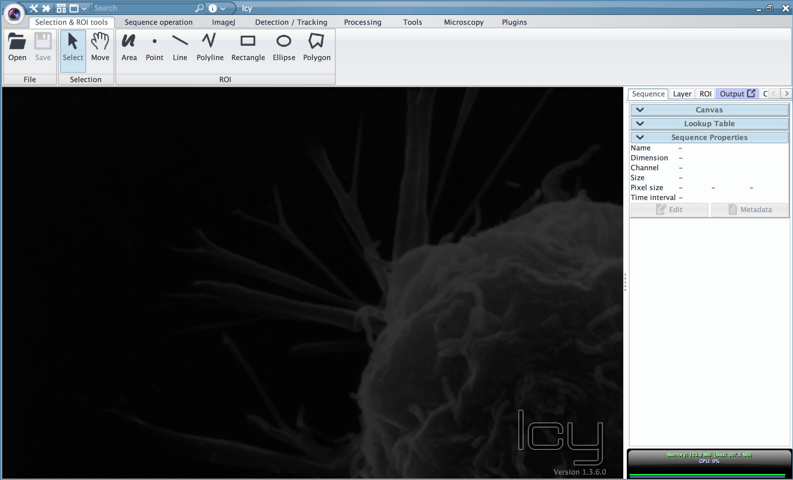
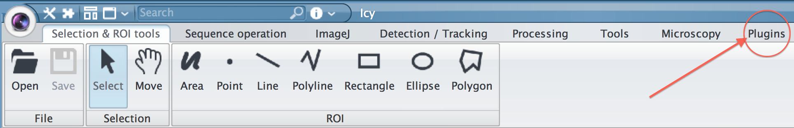
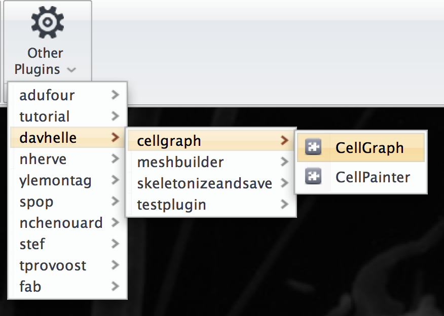
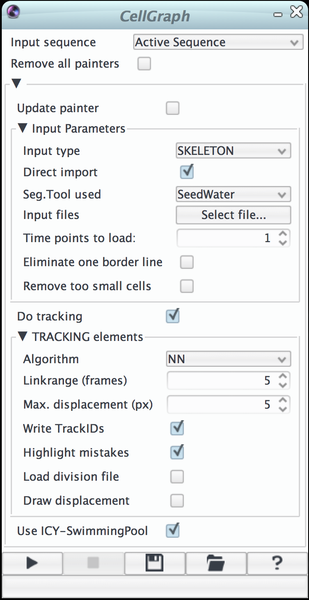
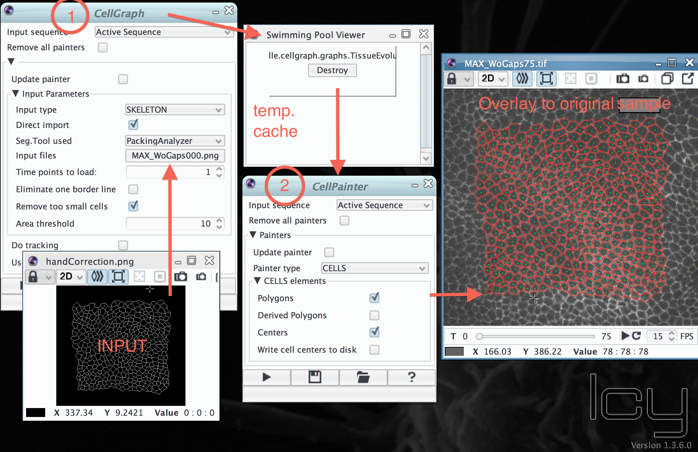
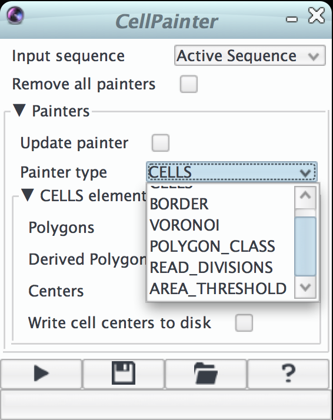
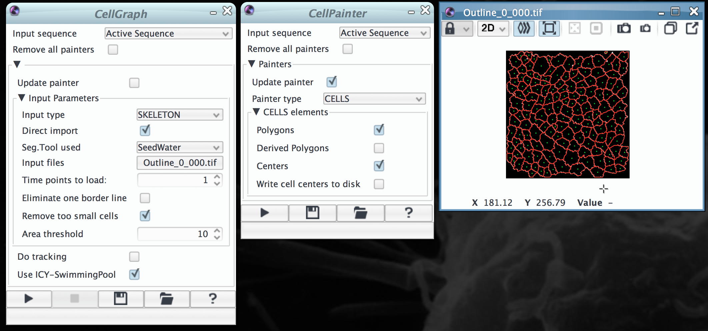

CellGraph Plugin Tutorial
Contents
Assuming that you loaded the GIT repository into eclipse, the following software needs to be added:
To successfully link the last to libraries change the Build path of your java project by adding the external jar files.
Start icy from within Eclipse by clicking on the Debug button (R=Release; D=Debug; U=Update Mode). Icy should now be open otherwise check that the icy4eclipse preferences are set right (see tutorial above).

switch to the Plugins tab and select the CellGraph from the Other Plugins menu item (see image below)

you should now see GUI interface of CellGraph

First open the image you want to overlay the result on (in absense also an empty stack can do the job)
The current version of CellGraph is a two step procedure. First through the main plugin (CellGraph) we specify the input files and set the tracking (optional) which creates the SpatioTemporal Graph structure ( UML diagram ). If the Do tracking option has been used the tracking result is now shown as overlay. Otherwise in the second step through the painter plugin (CellPainter) we can create various overlays that all use the Spatiotemporal graph structure created by CellGraph. As a technical note, the java graph object is exchanged between the two plugins through the Swimming pool feature of ICY.

| Input type | Specifies the type of input the Plugin will receive1 |
|---|---|
| Direct input | Option to automatically adjust to an input from a specific segmentation tool2 |
| Select file | Launches a file selection menu will appear and the user is asked to select the first skeleton to be read in (see exceptions for direct input choices) |
| Time points | Number of files that should be read in by the plugin. To use this function it is important that the files follow the naming convention which defines that last two characters of the name (before the .ext) specify the time point |
| Eliminate one border line | Removes the most outer ring of cells which might have suffered from sub-optimal segmentation. |
| Remove too small cells | Eliminate cells that are smaller than a threshold area which can be specified in the menu active after selection (see below). This can be useful if the skeleton happened to contain simple points. |
1 Currently supported input types:
* 8-connected-skeleton files ( all common image extensions are supported )
* VTK Polydata mesh files ( specification )
2 Currently supported segmentation tools for direct input:
* SeedWater Segmenter (choose the first file in output dir, Skeletons are adjusted to input requirements, needs small cell elimination)
* Packing Analyzer (choose the first input file, tool recognizes the folder structure where handcorrection.png should be stored)
| Algorithm | Tracking algorithm to be used for linking the cells in time |
|---|---|
| Max. displacement | Maximum displacements between consecutive frames of a single cell center |
| Linkrange | How many frames ahead the information should be propagated (limited by the amount of moving) |
| Write TrackID | Label the cells in the tracking overlay with their number ID |
| Highlight Mistakes | Do not fill the cells with their assigned tracking color but highlight likely mistakes (INSERT LEGEND!) |
| Load division file | Add a file specifying the divisions occurred in the sample (Revision needed) |
| Draw displacement | Add little arrows to show were the cell center is migrating from frame to frame |
To run the plugin just hit the triangle on the left-bottom-corner of the GUI window. The stGraph object will be automatically inserted into the ICY swimming pool (ICYsp) cache structure, unless the relative option is unselected.
By choosing one of the available painters (see below) the current stGraph in the ICYsp is used to generate the specific overlay / Painter type

| CELLS | Cell view of the tissue. Polygons outlines the cells, while Centers places a dot on the centroid. cells obtained by a skeleton can be furthermore abstracted by a minimal polygon which is based on all the branching points between 3/4 cells (Derived Polygon option). Also if wished the cells centers can be written out as text file (TO BE REFINED, BETA). |
|---|---|
| BORDER | Evidences all the cells on the border of the segmented area |
| VORONOI | Generates a voronoi diagram (ADD definition link) from all the centroids. Area difference evidences through a color code whether the area of the segmented cell is bigger or smaller than the area of the correspondent voronoi cell. |
| POLYGON_CLASS | Generates an overview which writes the neighbor number in each cell, i.e. the number of faces of the minimal polygon. |
| READ_DIVISIONS | Takes an input file listing all the divisions happened and propagates the information when tracking is available |
| AREA_THRESHOLD | Highlights all the cells that are bigger than the given area threshold. |
The tutorial images folder contains a skeleton file generated with SeedWater which can be used for testing purposes, i.e. Outline_0_000.tif. It works with the default parameter settings (Direct input: SeedWater) and as base layer you can open the same file as in the example figure below. Since SeedWater does not produce conventional skeletons, it is automatically pre-processed with a renewed ImageJ skeletonization removing simple points (see cellgraph.io.SkeletonReader.java for more details).

This tutorial was written by Davide Heller (Basler Lab 2013®)
{kind=link}